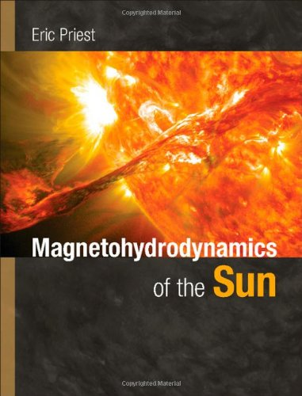

Magnetohydrodynamics of the Sun is a completely new up-to-date rewrite from scratch of the 1982 book Solar Magnetohydrodynamics, taking account of enormous advances in understanding since that date.
It describes the subtle and complex interaction between the Sun's plasma atmosphere and its magnetic field, which is responsible for many fascinating dynamic phenomena.
Chapters cover the generation of the Sun's magnetic field by dynamo action,
magnetoconvection and the nature of photospheric flux tubes such as sunspots,
the heating of the outer atmosphere by waves or reconnection,
the structure of prominences,
the nature of eruptive instability and magnetic reconnection in solar flares and coronal mass ejections,
and the acceleration of the solar wind by reconnection or wave-turbulence.
It is essential reading for graduate students and researchers in solar physics and related fields of astronomy, plasma physics and fluid dynamics.
Problem sets and other resources are available at www.cambridge.org/9780521854719.